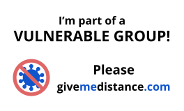

In a vulnerable group? Make others aware by wearing this badge
Why have awareness badges for vulnerable people?
Being in public places during the coronavirus outbreak can make people feel nervous. But having a I'm part of a Vulnerable Group badge makes it easier to let other people know you have a good reason for needing to keep your distance.
The government has not yet asked people from vulnerable groups (people with underlying health conditions such as diabetes, asthma and heart problems, and the over 70's) to self-isolate. Concerned for our relatives - who are part of this vulnerable group - especially when they are out in public, whether that's at work or school, or just popping to the shop, we thought an awareness badge might help.
Inspired by the Transport for London's 'Baby on board' badges that make people aware when pregnant women travel on the tube, we came up with the idea of a badge that informs the public that they are part of a vulnerable group, meaning they have a higher chance of developing severe illness if coronavirus is contracted, compared to the rest of the population.
The badge would raise awareness, and request giving vulnerable people distance. It will hopefully also act as a visual reminder that continues to raise awareness about the need to be vigilant and keep washing our hands. Health scientists say keeping at least 2 metres apart makes it less likely that someone will be infected by the virus when face to face, as it can be carried in tiny droplets from the nose or mouth when sneezing or coughing.
We appreciate that social distancing is not ideal, as most of us humans are sociable creatures. But in these strange times, this could make a difference to vulnerable people's concerns when out in public places where they can come into close contact with the public. Especially because not all vulnerabilities are obvious or visible.
We've made the badge template easy to use, simply print off on a sheet of labels or print off on A4 paper, cut it out and attach it with a pin onto your coat (like you would with a poppy) or stick it on.
-James and Claire